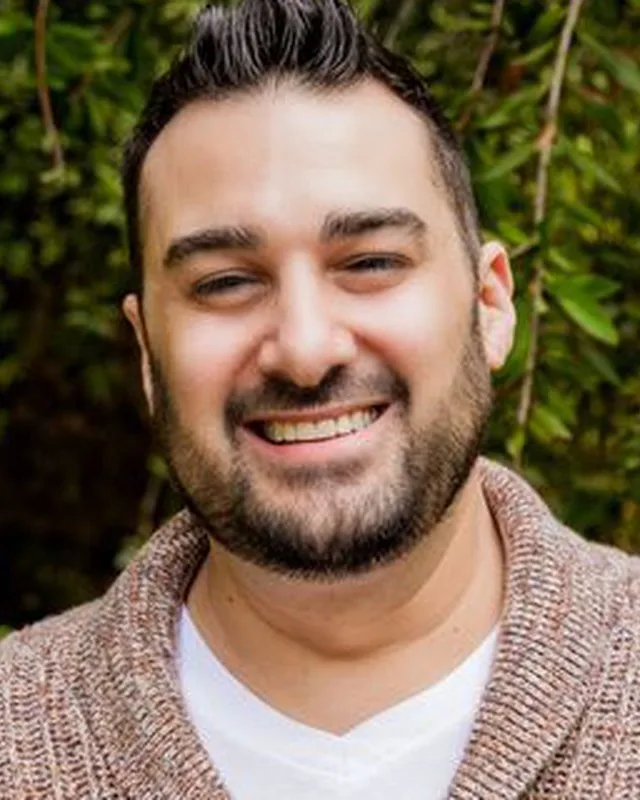
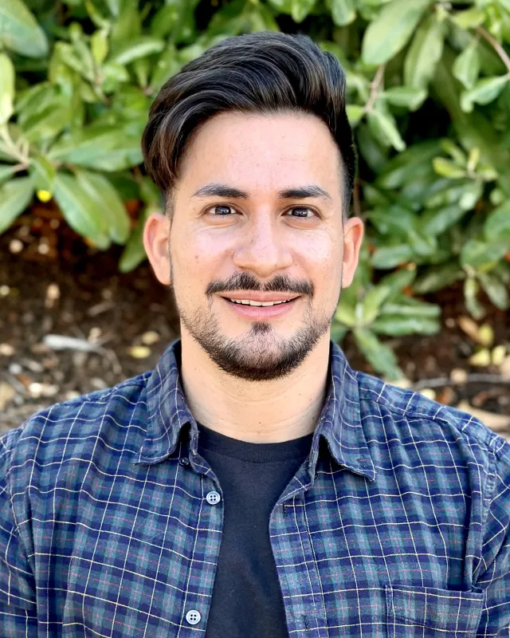

Meet the eight of us behind Golden State Rehab
The people you'll be doing the work with

Dr. Eric Chaghouri, MD
Medical Director
Dr. Eric Chaghouri is a board-certified psychiatrist whose clinical work focuses on the treatment of co-occurring psychiatric and addictive disorders. He earned his Bachelor of Arts in Biology, Summa Cum Laude, from UCLA, and his medical degree from the Keck School of Medicine at USC, where he served as chief resident in psychiatric emergency services and as resident clinical instructor and volunteer faculty in the Department of Psychiatry.
He completed a fellowship in forensic psychiatry at the USC Institute of Psychiatry and Law, and has extensive experience consulting and providing expert opinion in trial and for the film and television industry. As Medical Director at Golden State Rehab, Dr. Chaghouri oversees clinical operations and provides pharmacologic and psychotherapeutic care.
License number available on request and verifiable at search.dca.ca.gov.

Ari Labowitz, LMFT
Clinical Director
As Clinical Director, Ari Labowitz leads the therapy programs at Golden State Rehab. He works with clients facing depression, anxiety, major life transitions, difficult decisions and creative blocks, the kinds of struggles that often travel with addiction, alongside relationship and couples' concerns. He brings deep clinical expertise across individual, couples, and family therapy.
Practicing from a strengths-based, humanistic approach, he creates a safe space where clients feel secure and grow, treating each person as an individual and focusing on their strengths. A relationship expert as well, Ari is passionate about helping people build the relationship of their dreams, whether with a current partner or someone new. No matter what life has thrown at you or what you've tried before, Ari believes there is always hope, and will help you find the answers to what's getting in the way.
License number available on request and verifiable at search.dca.ca.gov.

Viola Sulahian, AMFT
Primary Therapist
Viola Sulahian is an Associate Marriage and Family Therapist (AMFT) with nearly four years of clinical experience providing compassionate, evidence-based care to people facing substance use disorders, mental health conditions, and co-occurring (dual diagnosis) challenges. As she completes the path to licensure as a Licensed Marriage and Family Therapist (LMFT), she stays focused on client-centered treatment that makes lasting change possible.
Viola has worked across every level of care, including detox, residential, Partial Hospitalization (PHP), and Intensive Outpatient (IOP), and specializes in treating addiction alongside depression, anxiety, PTSD, bipolar disorder, and other co-occurring conditions. Her approach draws on Cognitive Behavioral Therapy (CBT), Dialectical Behavior Therapy (DBT), Motivational Interviewing (MI), trauma-informed care, and person-centered therapy to help clients build resilience, coping skills, and self-awareness.
She believes healing begins with a safe, supportive relationship built on empathy, trust, and genuine connection. Rather than focusing only on reducing symptoms, Viola helps clients build fulfilling lives grounded in self-respect and purpose, whether someone is taking a first step toward sobriety, navigating a mental health crisis, or rebuilding after years of struggle.
Nechama Berkowitz, AMFT
Trauma-Informed Therapist
Nechama Berkowitz is an Associate Marriage and Family Therapist (AMFT) and a trauma-informed therapist at Golden State Rehab, where she specializes in mental health and trauma.
Trauma-informed care starts from a simple understanding: many people who struggle with substance use are also carrying the weight of painful experiences. Nechama's work centers on helping clients feel safe, move at a pace they can manage, and address the trauma and mental health concerns that often sit underneath addiction. As an AMFT, she practices under the supervision of a licensed clinician while completing her path to licensure.
Registration number available on request and verifiable at search.dca.ca.gov.
And the people who keep it all running
Scott and Dean both got sober before they ever got into this work, so when they tell you they get it, they really do.

Scott Hedlund
Director of Business Development
Scott Hedlund is Golden State Rehab's Director of Business Development, and he has lived the journey our clients are on. After years in corporate America, including a run as a top-performing sales representative at Yelp, Scott got sober and lost more than 150 pounds, transforming his life from the inside out.
He found his purpose in giving back: using his business background and acumen to connect people struggling with addiction and mental health to real, life-changing care. Scott knows firsthand the courage it takes to ask for help, and he brings that lived experience and drive to every individual and family he guides toward treatment.

Dean McDermott
Director of Brand Development
Dean McDermott is Golden State Rehab's Director of Brand Development. He is an alcohol and drug counselor and a breathwork specialist.
Before working in addiction treatment, Dean built a career as an actor and comedian. His path into this work is personal: he went through addiction himself and is now in recovery, and he brings that lived experience to the team. He is also a father of six.

Eduardo Garcia
Program Director
Sophia Scharpf
Case Manager
If you'd like to work with us, just say hi
Send us a note with your role and a little about youself.
Contact usLet's get you scheduled.
Verify your insurance in about a minute, or call our Los Angeles admissions team and we'll walk you through every step. Free and confidential.